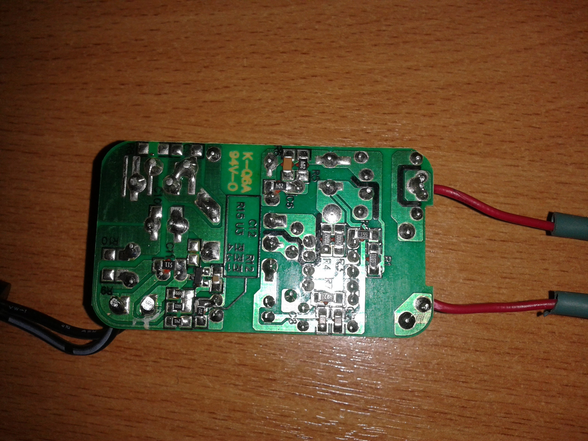
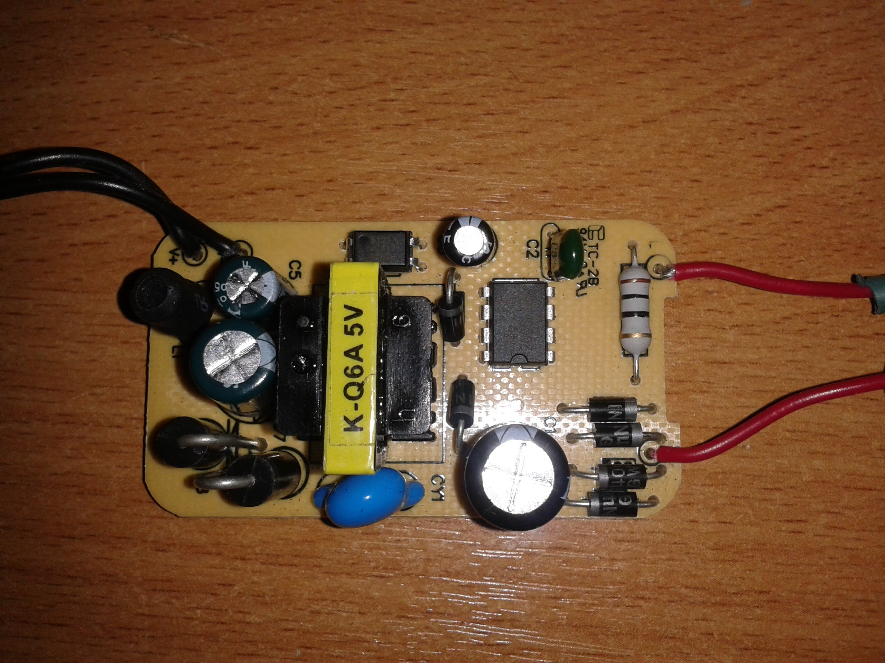
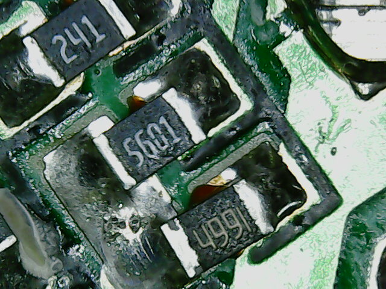
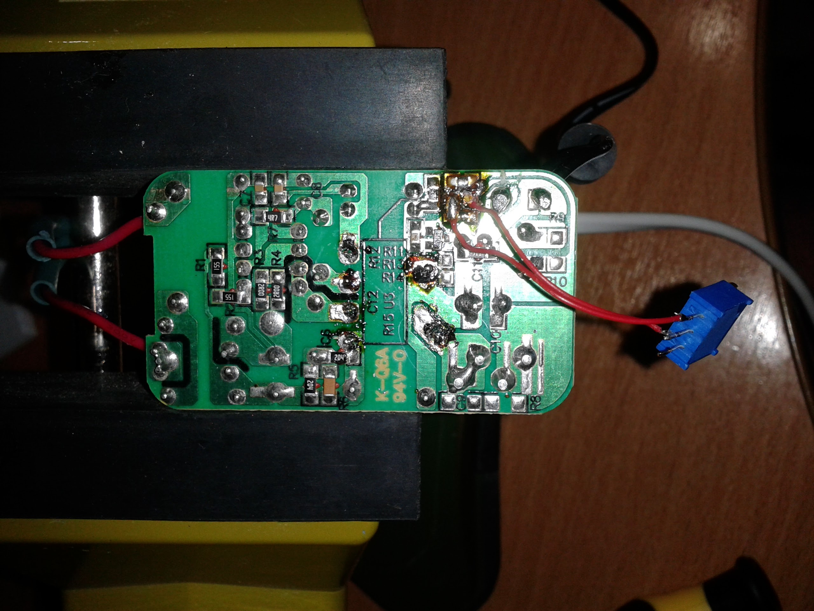
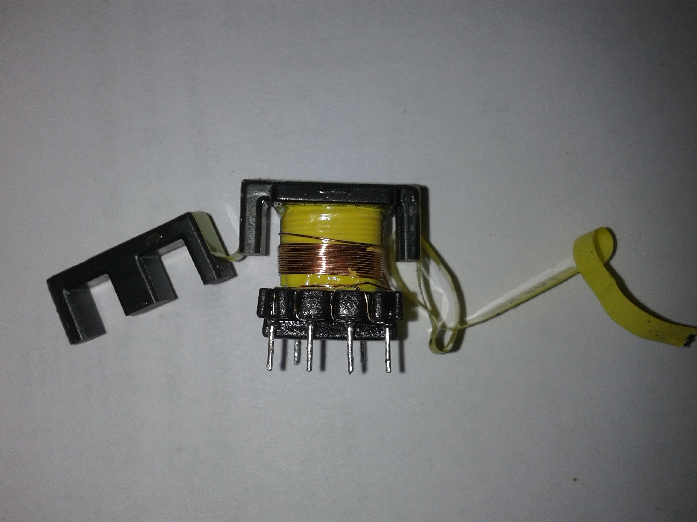
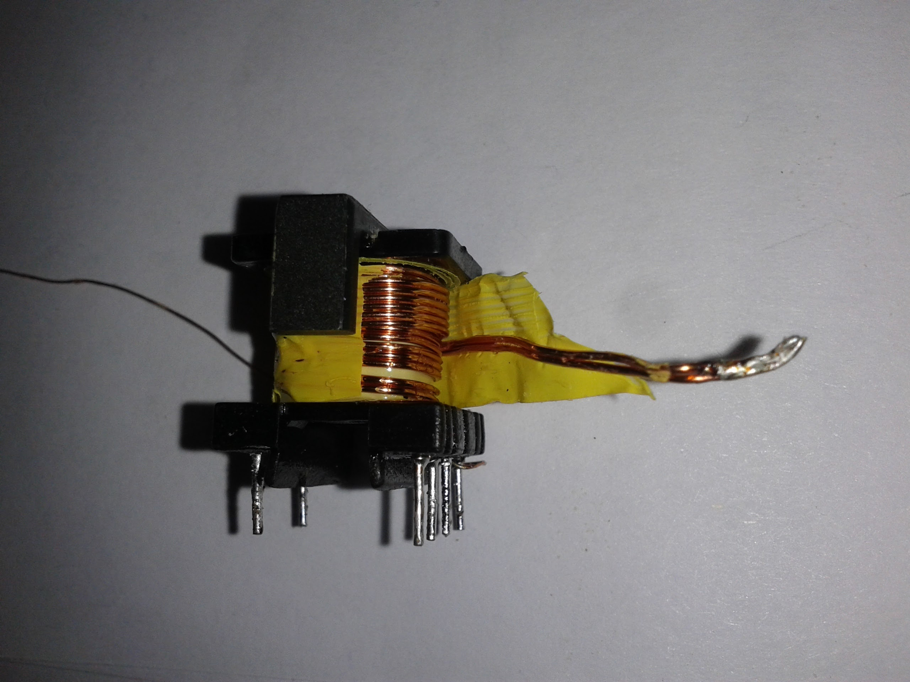
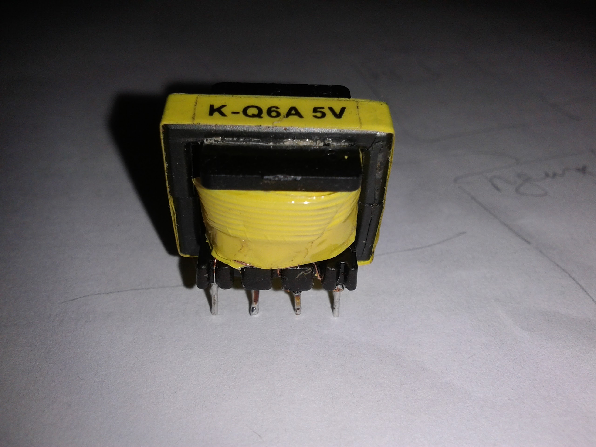

В одной из поделок понадобилось питание порядка 12-15 вольт. Как и у многих наверно дома валяется куча блоков питания от старых мобильников. Но все они как правило 5-ти вольтовые. Решил доработать один из таких блоков и поднять ему напряжение до требуемого.
Как правило все современные блоки питания являются импульсными, что с одной стороны уменьшает их размер, но с другой стороны достигается это некоторым усложнением схемотехники.
Пациент
Не заснял этот блок питания в оригинальном корпусе, да наверно это и не важно — обычный чёрный пластиковый корпус с вилкой.
Снизу плата выглядит вот так

А это вид на монтаж

Невооружённым взглядом виден классический импульсный БП.
Увеличиваем напряжение с делителя
Первое что пришло в голову увеличить напряжение в цепи обратной связи регулятора. Для этого как минимум нужно было найти на плате делитель. Вот собственно он.

Нижний резистор делителя 4.9 кОм был заменен на подстроечный номиналом 10 кОм. Монтаж конечно неказистый, но это времянка и с требуемой задачей вполне справляется.

Не прокатило — напряжение удалось поднять максимум до 8 вольт. При этом блок питания начал отчаянно пищать, что как бы намекало нам, что режим работы далёк от оптимального.
Дальнейшее насилие я посчитал бессмысленным и решил копнуть глубже.
Перемотка трансформатора
Трансформатор был выпаян из платы. Надежда на безболезненное удаление сердечника не оправдалась — легко вышла лишь одна половинка, а вторая была приклеена к катушке с обмотками каким-то компаундом и я не решился её отодрать, т. к. боялся повредить хрупкий сердечник. Тем не менее даже в таком виде удалось довольно легко снять изоляцию обмоток и обнажить первую обмотку. Как оказалось это была регулирующая обмотка, а мне была нужна вторичная.

Пришлось смотать эту обмотку, после чего обнажилась вторичная обмотка, которая состояла из 10 витков медного провода диаметром 0,6 мм, намотанным в 2 жилы.

Т.к. мне требовалось поднять напряжение примерно в 2 раза я домотал еще 12 витков. Хотя как уже подумал позже можно было ничего не доматывать и просто разделить жилы обмотки и таким образом удвоить их число. Мощность-то у нас всё равно не изменилась и ограничивается сечением сердечника трансформатора, а увеличив напряжение в 2 раза максимальный ток соответственно уменьшился в 2 раза и можно было бы обойтись проводом вдвое меньшего сечения. Но как говорится — «хорошая мысля приходит опосля».
Итого в результате после домотки нужного количества витков и возвращения обратно регулирующей обмотки получилась вот такая конструкция.

Ну, а далее трансформатор был возвращён на плату.
Подстроечным резистором регулятора легко удалось получить требуемые 12 вольт. Бонусом получил исчезновение даже того небольшого свиста который был у этого блока питания до переделки. Ну и далее уже всё просто — подстроечник был заменён на постоянный резистор и всё окончательно превратилось в конфетку.
Вот как-то так можно использовать старый хлам в своих поделках.
PS: На самом деле сделано ещё в 2015 году — только дошли руки дописать: )
Комментарии